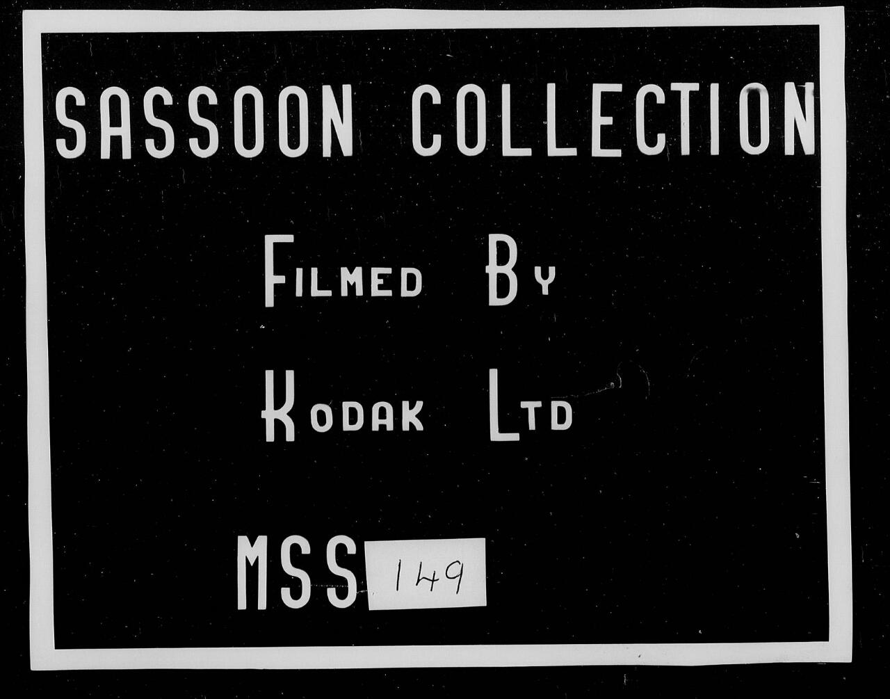
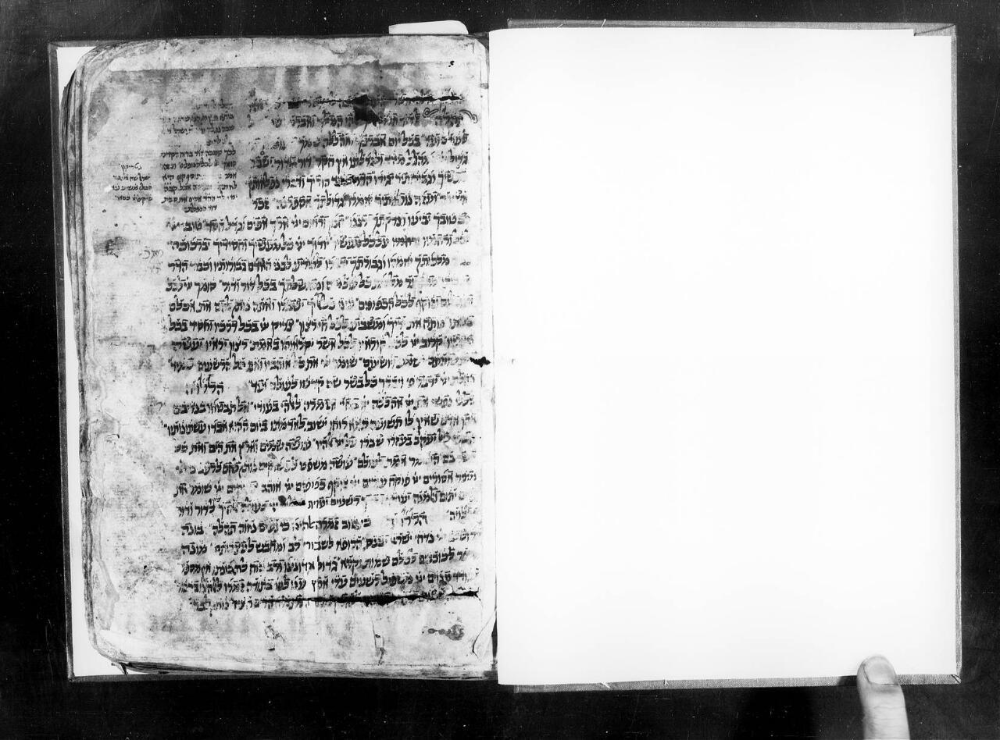
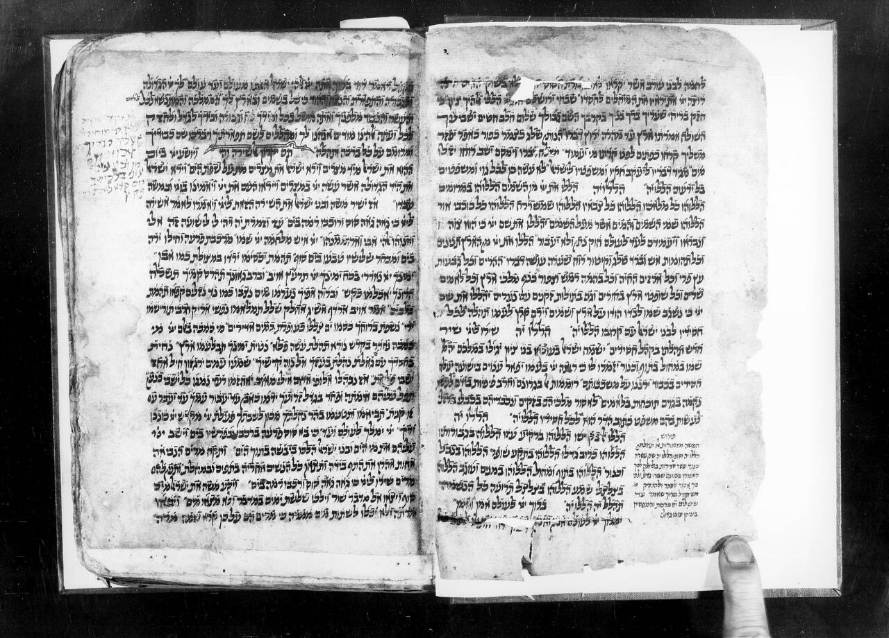
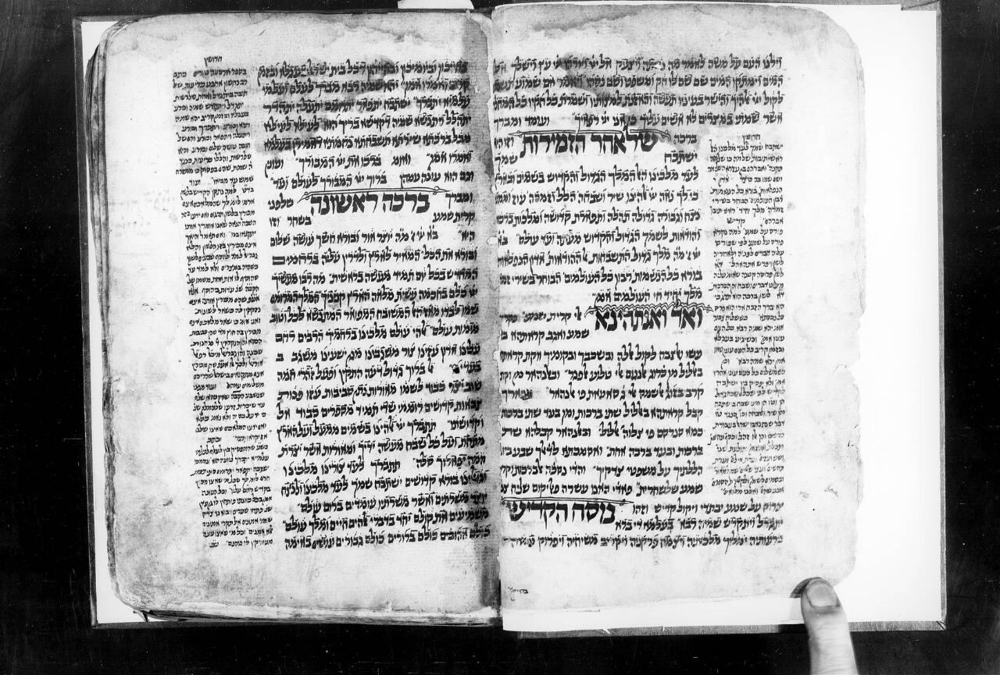

תכלאל | Manuscript | NNL_ALEPH990000844540205171 | The National Library of Israel
תכלאל | Astronomy Early works to 1800 , Prayer Judaism , Berit milah , Jewish ethics , Judaism Yemenite rite , Judaism Yemen (Republic) , Jews Yemen (Republic) History Sources , Hebrew language Vocalization , Judaism Liturgy Translations | ת"ו (1646) | Manuscript
Any Use Permitted



